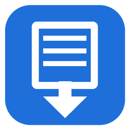

ScrollShot
Screenshot a whole scrolling page, not just what's visible.
Download for WindowsInstaller, no admin rights or Python needed.
How it works
- Press Ctrl+Alt+C, C from any app. The screen turns blue.
- Click the part you want to capture: the page, or a panel like a sidebar.
- Click to scroll down and capture more, as many times as you like.
- Double-click to save. Esc or right-click cancels.
The image is saved as a PNG and copied to the clipboard, ready to paste.
Why it's tidy
- No browser toolbar, taskbar, or repeated sticky headers in the result.
- Fixed sidebars appear once instead of being repeated down the image.
- Works on lists inside a page that scroll on their own.
- Lives in the system tray, with an optional start-with-Windows setting.
Windows says "Windows protected your PC"?
The installer isn't code-signed. Click More info, then Run anyway.